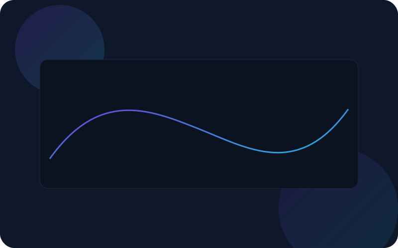

Interface moderna para testar seu ambiente
Este site estático foi criado para você validar portas, desempenho e estilo visual do seu projeto. Tudo local, sem dependências externas.

Cards de status
Ambientes
—ativos
Ambientes simulados gerados via JavaScript.
Uso de CPU
—%médio
Memória
—%em uso
Tabela responsiva
| Nome | Status | CPU (%) | Mem (%) | Ação |
|---|
Mini gráfico (Canvas)
O gráfico simula uma série temporal de CPU utilizando Canvas 2D.